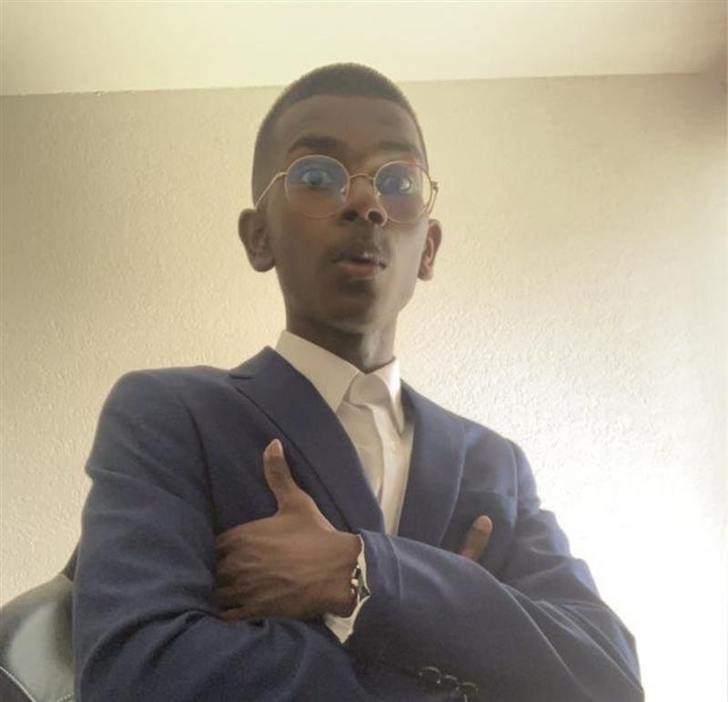
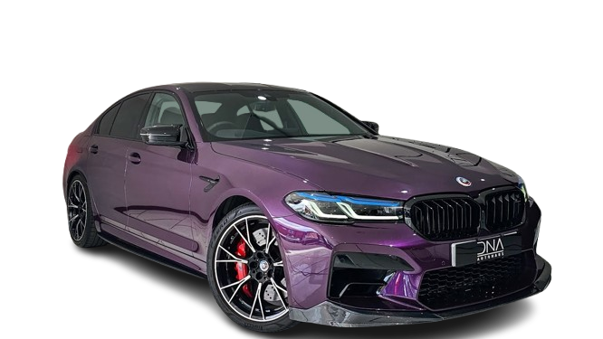
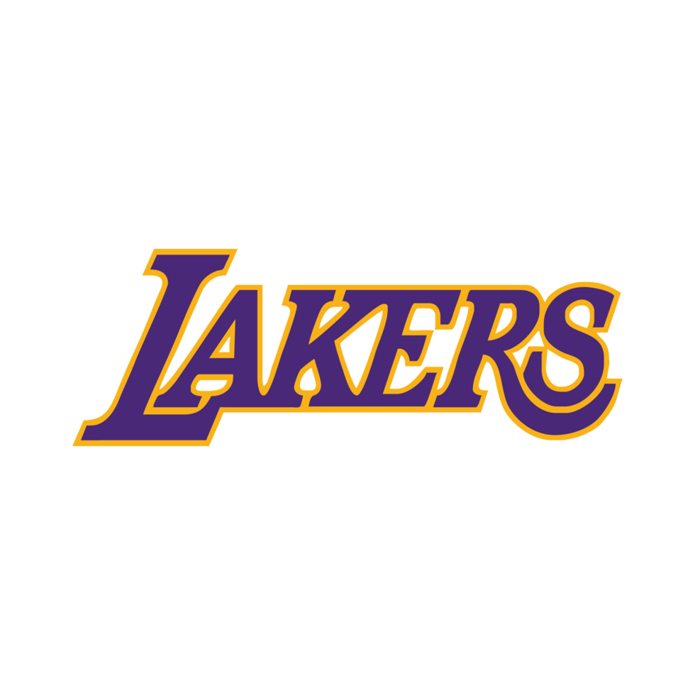
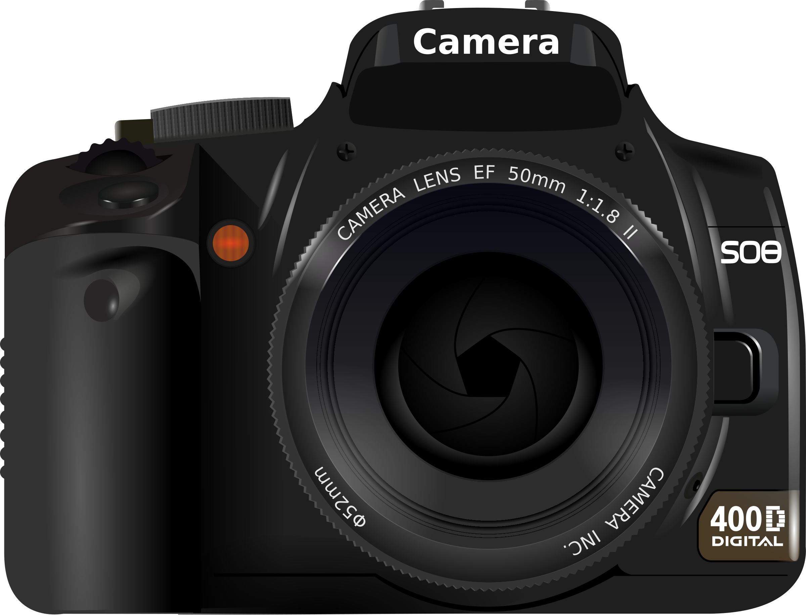

Qui est l’auteur ?
Je m’appelle Agashae Premakumar et j’ai crée ce site pour vulgariser une de mes passions, l’astronomie.
En plus de l’astronomie, j’aime l’automobile, la F1, l’informatique, le basket et la vidéo.

Je m’apelle Agashae Premakumar, j’aime l’automobile, la Scuderia Ferrari, l’informatique et surtout l’hardware, le basketball et les Lakers et la vidéo

Depuis tout petit j’adore l’automobile, au début c’était avec le F40, Puis après avoir fait des stages en tant que mécanicien, j’ai adoré les véhicules allemands, AMG GT63S, M5 F90, 911 GT3 Type 922 et j’adore toujours autant.
Avec l’automobile, j’ai découvert le sport automobile, j’ai mis Ferrari car depuis tout petit, j’adore cette marque et surtout l’écurie en F1. D’ailleurs le SF en bas veut dire Scuderia Ferrari (l’écurie en Ferrari italien). Et j’attends toujours une victoire de l’écurie en F1 + Charles Leclerc Champion du monde. "C’est le rêve de tout pilote de courir un jour pour Ferrari.” Alonso
J’ai mis l’informatique car depuis le Covid, j’adore voir des vidéos sur le hardware des PC sur la création de serveur, c’est pour ça que je me suis lancé dans un CFC en informatique.

Le basketball aussi, ça fait longtemps que j’aime ce sport, j’aime en particulier les Lakers, tout les grands joueurs qui ont au moins dans cette équipe car elle est légendaire.

Et finalement on a la vidéo, au début c’était en faisant des vidéos sur Internet, puis avec l’OCOM MITIC, j’ai pu me perfectionner et créer un reportage TV, 2 publicités et rédiger plusieurs scénarios qui ont été repris par la suite dans l’OCOM pour ensuite le présenter à l’examen final.